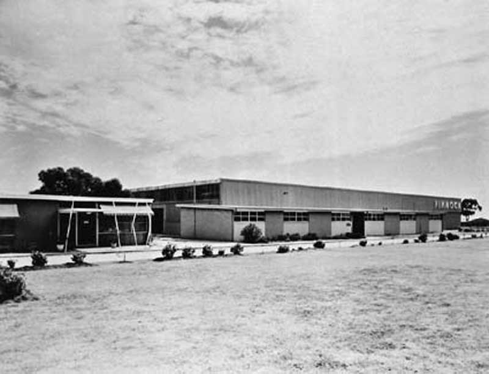
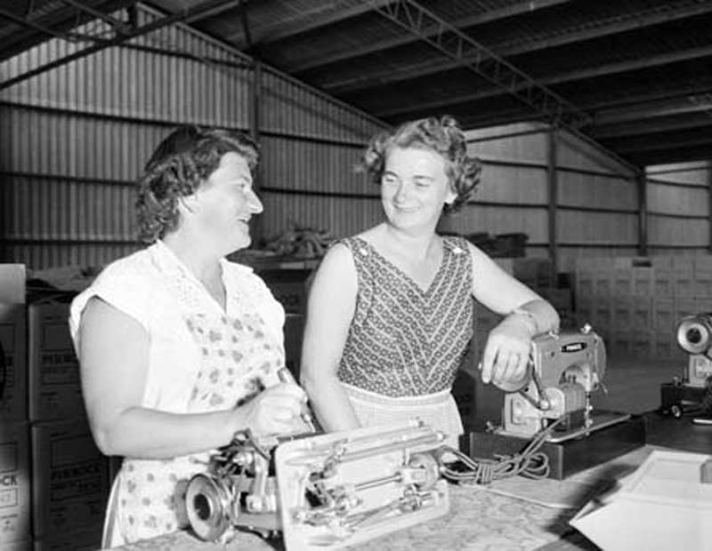
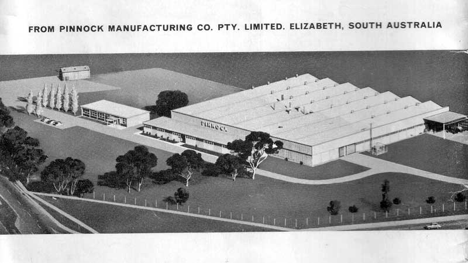
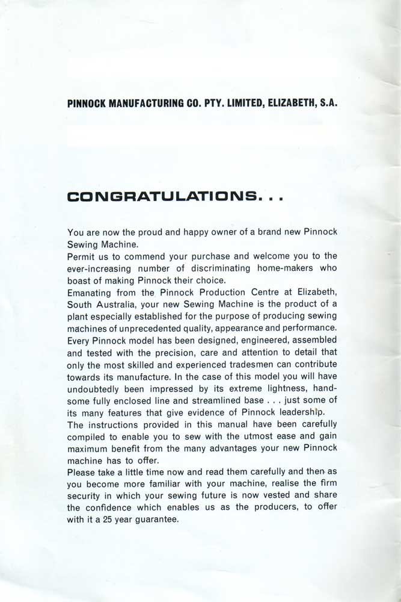
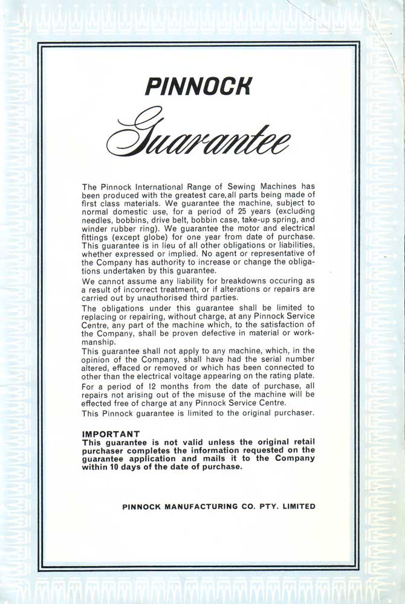

By Les Godfrey
(Click HERE for examples of Pinnock machines in the NeedleBar Picture Library)
Bill Pinnock, grandson of the founder of the Pinnock Sewing Machine Company c.1994
Acknowledgement:
Articles courteously supplied by Penny Davies Specialist Services Coordinator
City Of Playford Library Service
Elizabeth, South Australia
A copy of a page from a book called Elizabeth Champions by Tony Butcher, 1994.
Bill Pinnock could have been the first Mayor of Elizabeth, but denied himself
this honour by sticking to his strongly held convictions.
He was made the first Mayor-elect of the proposed Elizabeth City Council in 1959, when he was a councillor on the Salisbury-Elizabeth District Council.
But he was strongly opposed to the separation of the two areas and he resigned in protest a few months later.
“I believe then, and I still believe, that it was a waste to have a triplication of resources with the creation of three council areas – Salisbury, Elizabeth and Munro Para. I was used to the large council areas found in NSW,”
Bill says he is more generally remembered in Elizabeth as being associated with establishing the city’s first business, Pinnock Manufacturing Company, which was then the only sewing machine industry in Australia.
Before General Motors Holden became the young city’s main employer, Pinnock’s was employing 50 people in making sewing machines for export throughout Australia, New Zealand and Europe.
The company was founded in NSW by Bill’s grandfather
in 1891.
Following the death of Bill’s father,
the Pinnock family sold the company but Bill stayed on as one of its directors.
The South Australian Housing Trust was offering attractive incentives for companies
to relocate to the new satellite city and the decision was taken to transfer
to Elizabeth.
Bill and his wife were among the first residents in Haydown Road, Elizabeth Grove, and still live in the same house.
“It was an exhilarating experience being involved in a new development. I liked South Australia’s climate but missed the NSW surf,” Bill says.
The house was least to the Australian Air Force in 1961 – 62, while the Pinnocks were in New Zealand helping to develop a sewing machine assembly there.
Leaving the sewing machine business in 1962 (the company ceased operation five years later), Bill took over as relief manager of the local Woolworth’s store. He spent 23 years with the company, retiring as manager of the West Lake’s store in 1985.
Bill has been involved with many community organisations over the years, including the Elizabeth Grove Progress Association, the Birthday Celebration Committee, the Lyell McEwin Hospital Board, the Rugby Union Club, the Aquatic Club, the Diving Club, and a foundation member of the of the Bowling Club.
His two years on the Birthday Celebration Committee,
1959 – 60, are regarded as a period of consolidation for the celebrations
and were marked by a strong spirit of co-operation.
The committee also developed the occasion from a weekend event to a week-long
celebration.
The Pinnocks raised four children in Elizabeth, who have gone on to excel in their chosen fields and to provide their parents with eight grandchildren.
“We have always retained a strong desire for Elizabeth and its development,” Bill says.
Occupation: Retired store manager. Year of birth:
1925. Place of birth: Mosman, NSW.
Moved to Elizabeth: 1958. Lived in: Haydown Road Elizabeth Grove.

(Australian National Archives - Picture No. A1200, L35783)
Pinnock Factory Workers on the Assembly Line c.1958

At Elizabeth, 17 miles north of Adelaide, South Australia, the State Housing Trust is building a new city that will become the state’s second largest within two years. Australian and Dutch migrant work side by side in Pinnock’s sewing machine factory at Elizabeth. Left is Mrs. Dulcie Gates, Of Phillip Highway, Elizabeth South. With her is Mrs. Coorie De Kuyer, 32, from 42 Johan van Zanten Straat, Amsterdam.
(Australian National Archives - Picture No. A12111, 1/1958/10/22
An excerpt from the transcript of an oral history
recorded around 1996 from “From Dusty Plains to Royal Names 40 Years of
Change”
Compiled by Linda Allery, Interviews & Recordings by Dr. Pauline Payne.
William Pinnock
This is a recording made for the City of Elizabeth Oral History Project on behalf of the Elizabeth Local History Collection. It is an interview with William Pinnock on February 24th 1995 at his home in Elizabeth and the interviewer is Dr. Pauline Payne.
Tape 1. Side A.
The first thing I wondered about was how your firm chose to come to Elizabeth, and I wondered what sort of incentives had been offered by the South Australian government?
Well basically the decision to come to South Australia was made because the South Australian government assisted in the development and building of the factory, which meant that the company wasn’t involved in any financial outlay initially in that development. So there was quite an encouragement for them to reach the decision to come to South Australia.
And were they approached, or how did they come to hear about the South Australian development? Do you know?
I’m not particularly, I’m not really sure. ---But I think perhaps – Ross Wright, with his connections at the time, had heard of it through, government sources. But I myself cannot be really sure.
And the Housing Trust built the building for the factory?
They did.
Right.And that included the land it was built on and the actual factory itself.
And were there other incentives such as help with the cost of power and water?
None.
Right.
None, to my knowledge.
Right. So, at the stage when you found out that you’d be coming over, when was that? How long before you actually moved over?
Well, initially I came on the 1st November 1957, was the day on which the factory was opened by Thomas Playford and that was my first visit to South Australia in relation to the factory. I stayed over night at the Elizabeth Hotel and returned back to Sydney the following day. I then moved over myself, um, just after the New Year in 1958, I came over myself and stayed at the Elizabeth Hotel and I was there ‘til - the end of February when the family moved over and we stayed at the Hotel ‘til beginning of March and at that time the house we’re now living in was completed and we were able to move into it. Ah, we were able to come in early, in as much that the home was finished, there was no fences, no clothes hoist, but we enabled to move in so that we were living in our own home. The fact there were no fences, the people up in Sandleheath Road and round Sampson Street, which is behind us, would frequently walk right across the back yard and those areas that were not fenced, to go to the shops. So, it was interesting to be involved with the passing parade of neighbours.
And what were your first impressions of Elizabeth when you came? Say, when
you went back, do you remember-
Well...
What you told your wife?
Well, I would have probably been most conscious the fact it was, like being in the country. It was - an open area, it was a good environment, and as I said earlier, it was just like living in the country. For example, when you left – Grand Junction Road and drove north, there were no homes on either side of the main road, which, was a single main road in those days. And the first indication you had of homes, was you started to get towards Salisbury, and we’d turned off the main road into the street that took us round into Commercial Road and come and we came round Commercial Road to um, what was called Philip Highway. But when we got onto Philip Highway It was a dirt road, it was a gibber dirt road and it only struck bitumen when it got to, just past, or about the entrance of the Elizabeth factory. The street that we lived in, Haydown Road, was not sealed, it was a dirt road. There were no homes in the Vale which is to the south of us. The road, Haydown Road was possibly 18 (inches) to 2 feet lower than what it is today and it remained that way until the Trust - arranged for the road to be consolidated and - basically they rotary hoed, cement mixture into it, built up the surface and then bitumised (sic) it.
Were the houses immediately around you all built about the same time?
They were.
Right
The whole of Haydown Road in the long, sweeping street that ran round to where
the Lyell McEwin Hospital is now were all built at that stage.
So, were there people comparing notes about what to plant in their gardens, is that something that happened?
Well, actually in this particular part of the Haydown Road, we were the first to move in, there were no neighbours at all on either side, or the length of the street. To answer your question on gardening, George King had the nursery at that stage, which was – to the east of the Elizabeth factory, on the opposite side of Philip Highway and he was a great help to people that – wanted to select suitable shrubs and trees to plant in their home. Also the Housing Trust allowed the people to have six trees that they could plant in their gardens. But George King was probably the person well known for gardening in those early days, in Elizabeth. He was actually one of the councillors.
Was he?
Eventually.
And what about your wife, how do you think she found it?The Pinnock Factory c.1966


